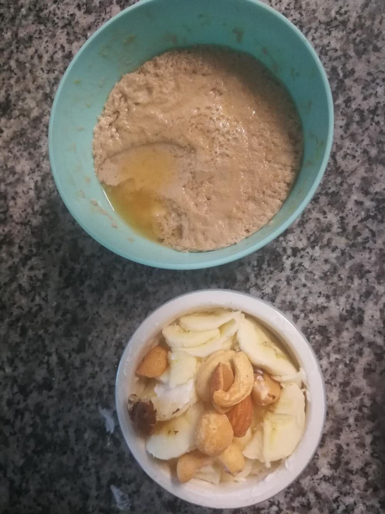
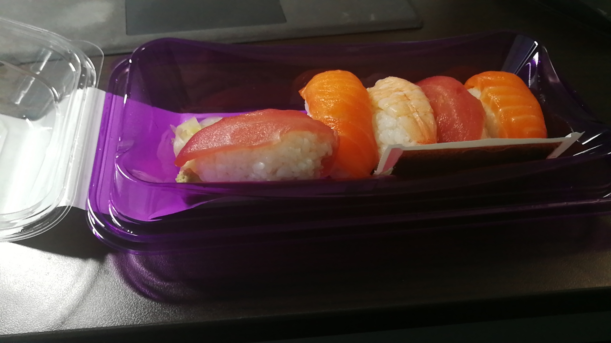
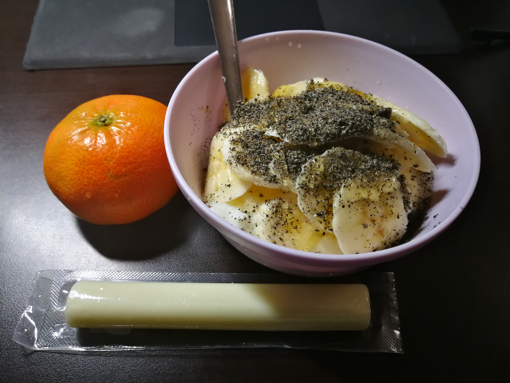
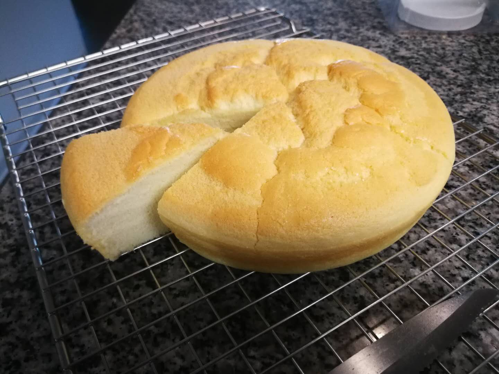
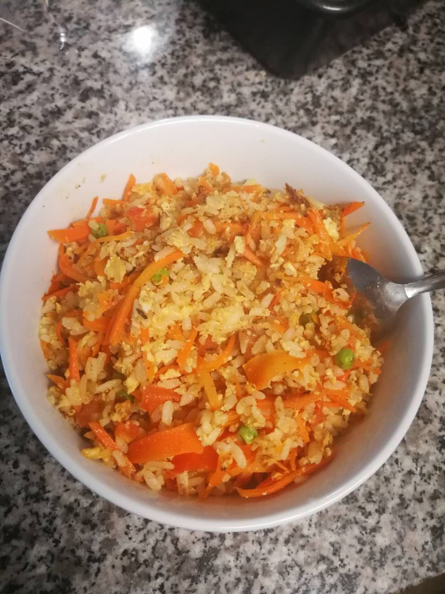
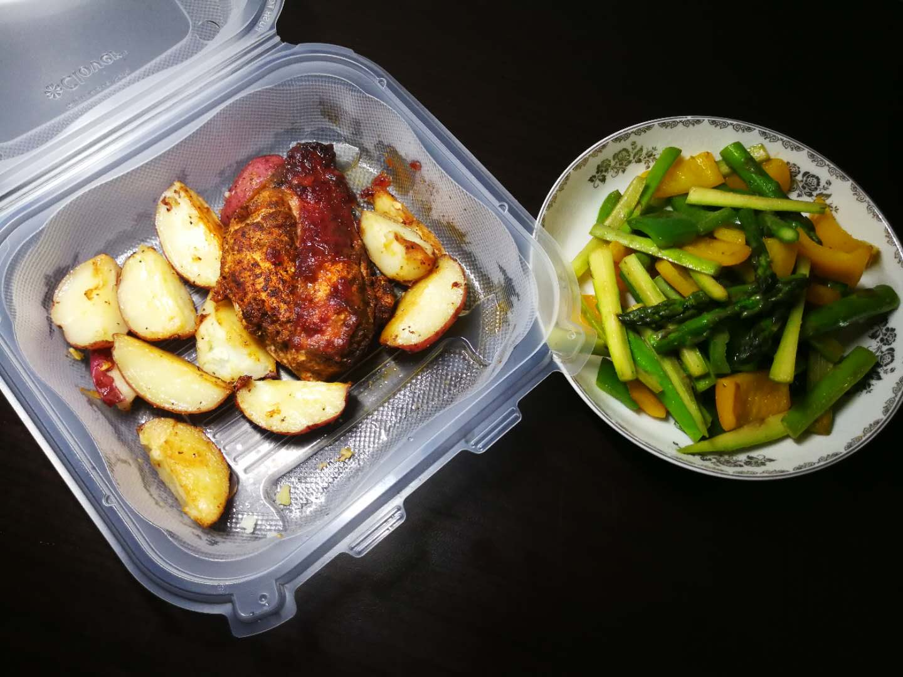
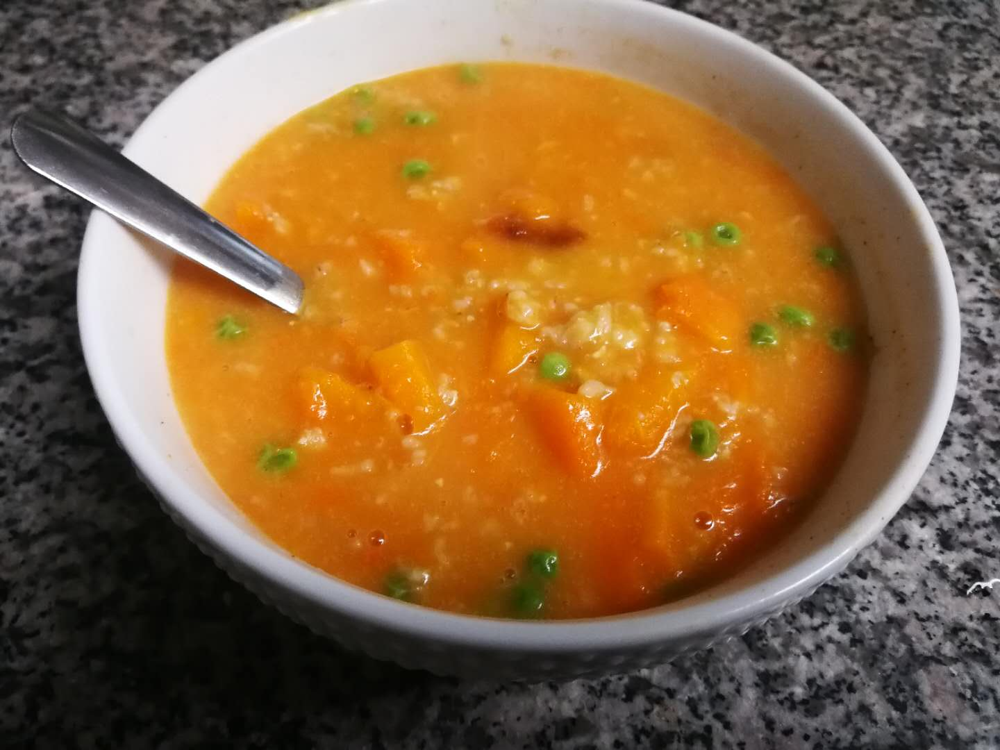

As you can clearly seen in my weekday meal patterns, I am not a morning person during weekdays at all!
But my meal schedules during weekend is slightly different from that during weekdays lol.
More personal time allows me to do some complex dishes or try new recipes out.
I commonly use weekends as two big-cheat days so that I can enjoy some food I have desired during the entire week, which I have to praise myself a lot of making such outstanding meals!
The new recipe I try out in this week is the Koren Kimchee, which turns out really successful and decilious!
It's high quality and texture can been seen from its blimshed chili color and the juicy sauce underneath the chinese cabbage!
I will put picture of the Kimchee in the Recipe Page and attach an hyperlink of its recipe at the bottom of this page.
So if you are interested in that sort of thing just go checking out!
Yeah! So just take a look underneath and enjoy! :)
| Breakfast (Morning Snack) | Lunch | Dinner/Supper | Extra Snack | |
|---|---|---|---|---|
| Saturday |  |  |  |  |
| Sunday | No Breakfast/Snack for today |  |  |  |